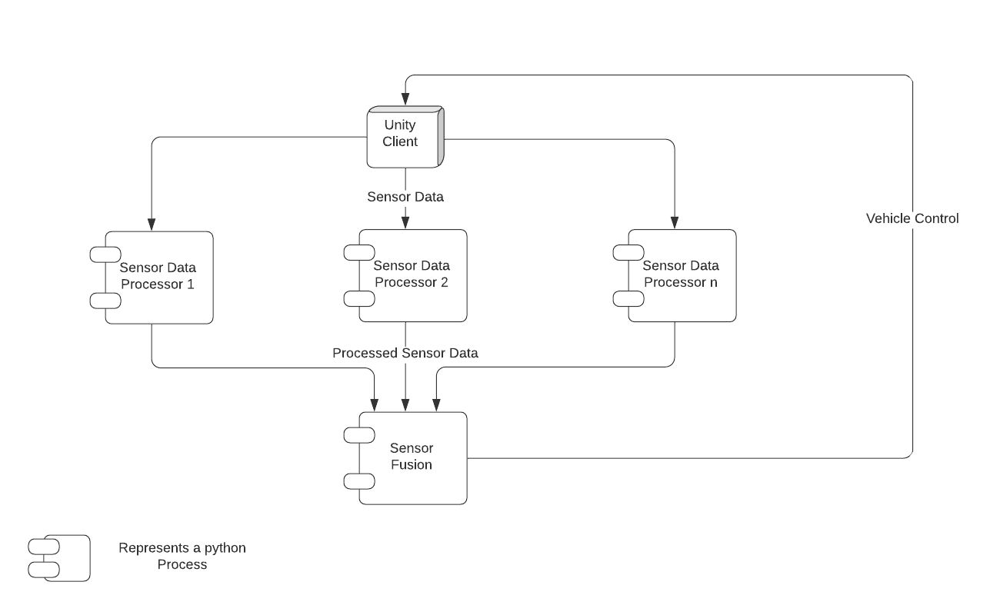

Welcome to Inference Server’s documentation!¶
Introduction¶
This project is backend of a bigger project Autonomous Driving Simulation. This backend deals with ML stuff that are hard to do in unity.
System Design & Architecture¶
- On the highest level unity sends raw sensor data to this server, and it provides analysis of that data back to unity.
- 
API Reference¶
If you are looking for information on a specific function, class or method, this part of the documentation covers it.